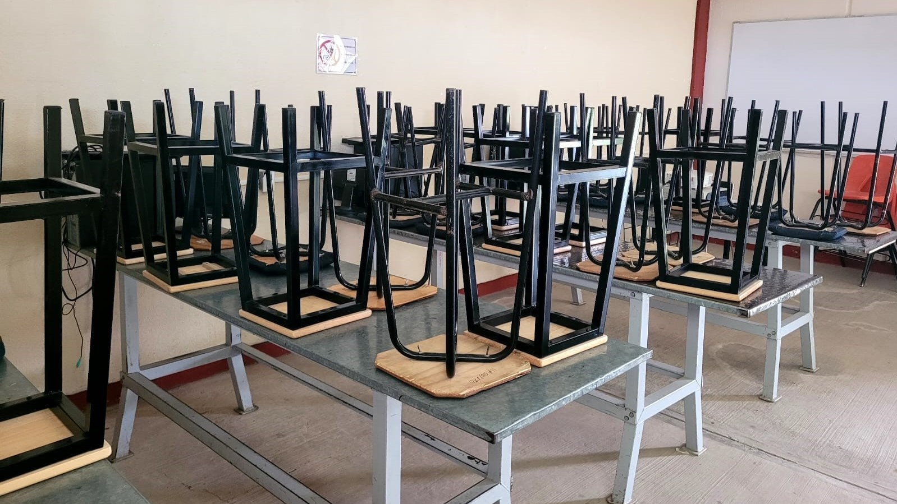
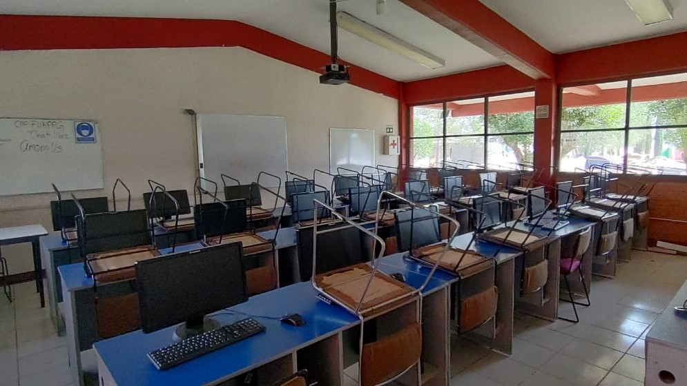

Características
Justificacion
La carrera de Técnico en Soporte y Mantenimiento de Equipo de Cómputo se desarrolla como vertiente de la carrera de Informática y ofrece las competencias profesionales que permiten al estudiante realizar operaciones de soporte y mantenimiento a equipos de cómputo.
Perfil
La carrera de Técnico en Soporte y Mantenimiento de Equipo de Cómputo se desarrolla como vertiente de la carrera de Informática y ofrece las competencias profesionales que permiten al estudiante realizar operaciones de soporte y mantenimiento a equipos de cómputo de manera presencial y a distancia.
Aprendizaje
operar circuitos, instalar redes de datos, sistemas microprocesados y mediante un correcto diagnóstico, a dar mantenimiento a distintos equipos de cómputo y otros dispositivos.
Laboratorío

La carrera de Técnico en soporte y mantenimiento de equipo de cómputo se desarrolla como vertiente de la carrera de Informática y ofrece las competencias profesionales que permiten al estudiante realizar operaciones de soporte y mantenimiento a equipos de cómputo de manera presencial y a distancia, tomando como base las especificaciones del fabricante e instalar redes LAN de acuerdo a las necesidades de la organización.
Materiales que se ocupan en las practicas
multimetro, desarmadores, pasta termica, cautin y pulcera antiestatica.
¿Que hacen?: inslatar antivirus, instalar software de conexion remota para brindar mantenimiento, la
quema discos opticos, instalacion de windows.

Materias semestrales
Primero
- Álgebra
- Inglés I
- Química I
- Tecnologias de la información y la comunicación
- Lógica
- Lectura, Expresión oral y Escrita I
- Acercamiento a la lectura I
- Tutorías
Segundo
- Geometría y Trigonometría
- Inglés II
- Química II
- Lectura, Expresión oral y Escrita II
- Ensambla, Configura e Instala Hardware Y Software En El Equipo De Computo
- Comprensión de textos II
- Tutorías
Tercero
- Geometría analítica
- Inglés III
- Biología
- Ética
- Mantiene Hardware Y Software En El Equipo De Computo
- Tutorías
- Comprensión de textos III
Cuarto
- Cálculo diferencial
- Inglés IV
- Física I
- Ecología
- Proporciona Soporte Tecnico Presencial O A Distancia De Software De Aplicaciones Y Hardware
- Producción de trabajos IV
- Tutorías
Quinto
- Cálculo Integral
- Inglés V
- Ciencia, Tecnologia, Sociedad y Valores
- Diseña Redes De Computadoras.
- Producción de trabajos V
- Tutorías
Sexto
- Probabilidad y Estadística
- Filosofía
- Asignatura Propedéutica
- Asignatura Propedéutica
- Administra redes LAN de acuerdo a los requerimientos de la organización.
- Tutorías
Apartir de sexto semestre al alumno se le agregaran dos materias mas, llamadas propedeuticos.
Mas informacion
Comentarios
"Me parece muy interesante conocer todos los componentes de las computadoras, la forma de armar o desarmar computadoras, todo lo que vemos y varios programas que vamos conociendo"
- Sergio"2I"
"Me parece bien y me gusta, pero siento que le falta mejorar y enseñar con computadoras mas modernas y que no sean obsoletas."